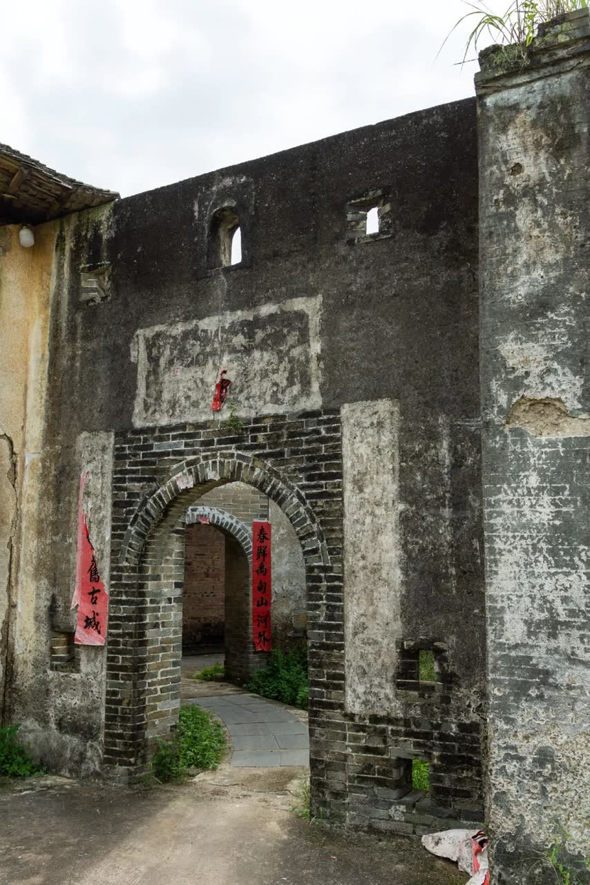

点击看大图
点击看大图
真武阁
ZHENWU PAVILION · RONG COUNTY四柱悬空，千载独步。三层纯木杠杆结构不用一根铁钉，二楼四根金柱悬空不落地，历经数百年地震与台风而不倾，是中国古建史上的奇构。
- 年代明万历元年（1573 年）
- 结构三层纯木杠杆结构，不用一钉
- 奇观二楼四根金柱悬空不落地
玉林的「古」，不在博物馆的玻璃柜里，而在仍能登临的楼阁、仍能穿行的街巷、仍有人住的围屋之中。
点击看大图
四柱悬空，千载独步。三层纯木杠杆结构不用一根铁钉，二楼四根金柱悬空不落地，历经数百年地震与台风而不倾，是中国古建史上的奇构。
 点击看大图
点击看大图
唐时容州治所，民间传为贵妃故里。城墙、古阁、寺塔与街坊相连，入夜灯笼次第亮起，恍若回到那个气象万千的盛唐。

点击看大图半月池塘映着高墙碉楼，祠堂在中轴上层层递进。一座围屋，便是一部客家人迁徙至此、聚族而居的家族史。